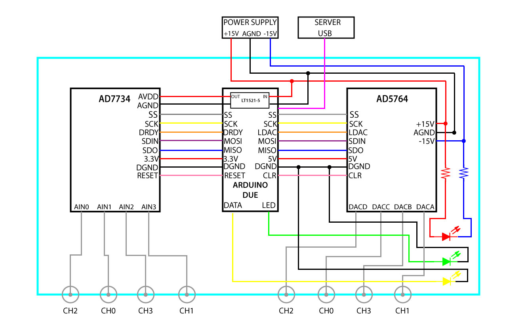

Assembly instructions
Schematics

Eval boards
Some AD5764 eval boards have J21 unpopulated. If you encountered this, solder a 14-pin header to the AD5764 eval board so the Arduino can communicate with the AD5764 via SPI.
The AD5764 eval board has 14 jumpers that set various options on the board. Refer to the datasheet for a complete description. For the DAC-ADC, set the jumpers like as follows:
| Jumper # | State |
|---|---|
| LK1 | B |
| Lk2 | C |
| LK3 | Inserted |
| LK4 | B |
| LK5 | A and B |
| LK6 | Inserted |
| LK7 | A |
| LK8 | B |
| LK9 | B |
| LK10 | Removed |
| LK11 | A |
| LK12 | Inserted |
| LK13 | Inserted |
| LK14 | Inserted |
Similarly, the AD7734 eval board has 30 jumpers that set various options on the board. For the DAC-ADC, set the jumpers as follows
| Jumper # | State |
|---|---|
| LK1 | A and B |
| Lk2 | A |
| LK3 | A |
| LK4 | Inserted |
| LK6 | Inserted |
| LK8 | Inserted |
| LK11 | Inserted |
| LK12 | Inserted |
| LK13 | Inserted |
| LK14 | Inserted |
| LK15 | Inserted |
| LK16 | Inserted |
| LK17 | Inserted |
| LK18 | Inserted |
| LK19 | Inserted |
| LK20 | Inserted |
| LK25 | Inserted |
| LK26 | Inserted |
| LK29 | Inserted |
| Remaining | Removed |
Arduino shield
Now solder headers, screw terminals and the voltage regulator to the DAC-ADC Arduino shield. You can ensure a good fit to the Arduino if you solder the headers with the shield in place, just make sure not to overheat the Arduino (be quick and minimize soldering iron heat).
Enclosure assembly
Machine holes in the enclosure front panel for BNC feedthroughs and indicator LEDs, and in the back panel for the D-sub power and USB feedthroughs. Attach all the feedthroughs to the enclosure and attach the front and back panels. For machining simplicity, we used circular BNC feedthroughs. Use lock-washers for the BNCs and make the nuts nice and tight; alternatively, machine D-holes and get appropriate feedthroughs.
Connect the Arduino and USB feedthrough using the 6-inch USB A-B cables, and connect the SMB-BNC cables to the chassis and the eval boards. Then attach the three PCBs (AD5764 and AD7734 eval boards and Arduino) to the enclosure with mushroom-head fasteners.
Make power connections as shown below. Twisted pairs for power likely have no benefit, but they keep things tidy. You will have an easier time with the screw terminals if you use solid conductor hook-up wire. The SMB cables to the eval boards are shown connected below, but other wiring may be easier if you save those until the end.
Wire the power and communication indicator LEDs as shown below. For the power LED, solder two 910 ohm resistors at both ends. If the LED doesn’t light up when you plug in the power cable, try reversing the leads.
Make the connections for communication using two ribbon cables between the Arduino shield, and the J21 and J2 pins on the EVAL-AD5764 board and EVAL-AD7734, respectively.
Put the lid on your enclosure and the hardware is done! Plug in the power and the +/- 15 V; the indicator LEDs will turn on, but the communication LED will not turn on until the DAC-ADC firmware is uploaded to the Arduino.